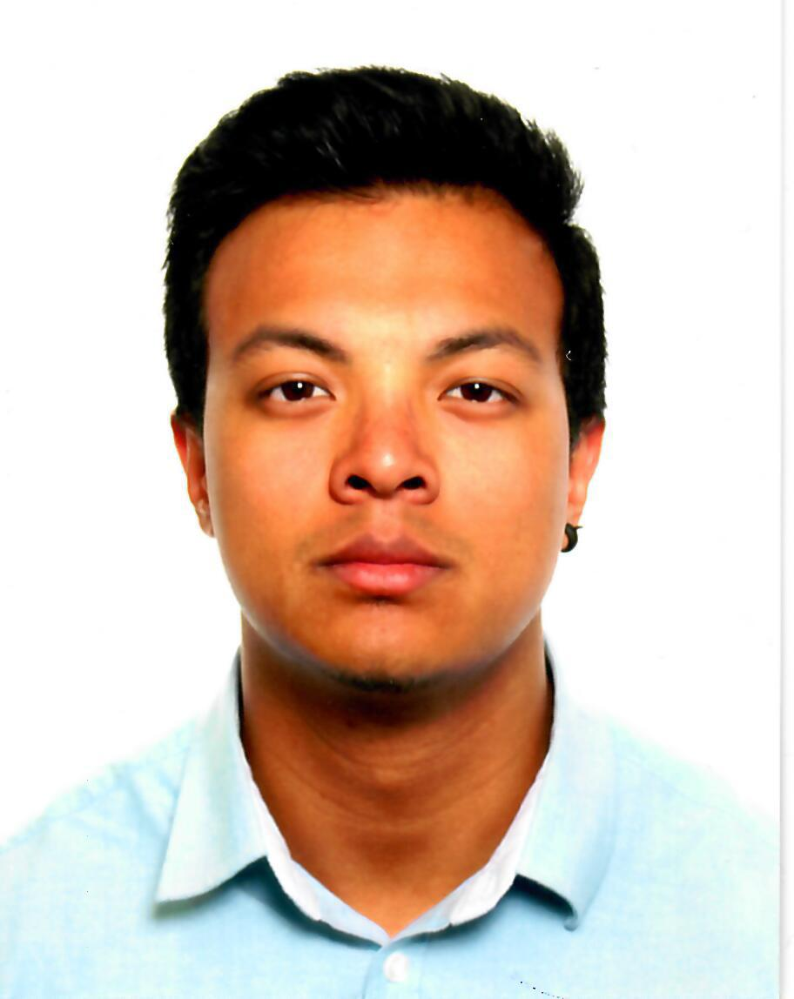

|  |
Miquel SerraEstudiant de La Salle. Fotògraf, Web Developer i amant de la cervesa artesana. |
| Dates | Feina |
| Juliol 2013 | Becari a la plataforma online de catàlegs Ofertia |
| Juliol 2015 | Treballador de l'empresa Castells Vilaseca |
| Febrer 2017 | Voluntari a 4YFN |
| Setembre 2017 - Juny 2019 | Professor a l'acadèmia Forma't Sant Cugat |
| Juny 2018 - Agost 2019 | Ajudant de cuina al bar Febrer Sant Cugat |
| Català | Nivell alt |
| Castellà | Nivell alt |
| Anglès | CAE (Certificate of Advanced English) |
| Francès | DELF (Diplôme d'Études en langue Française) |